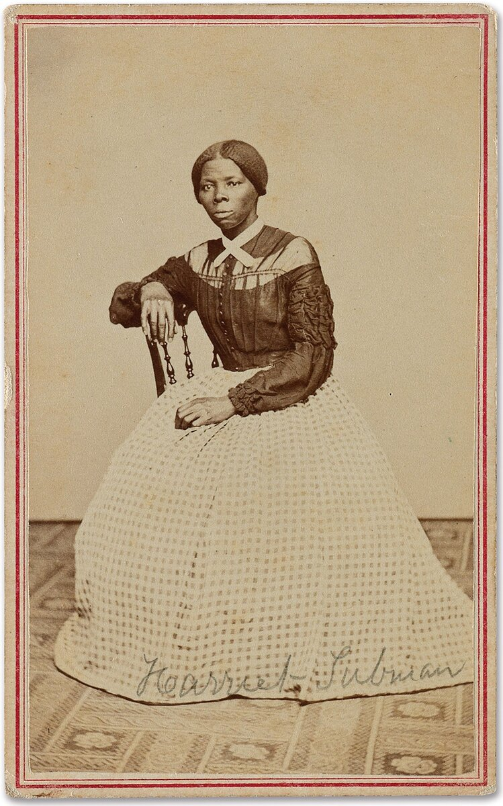
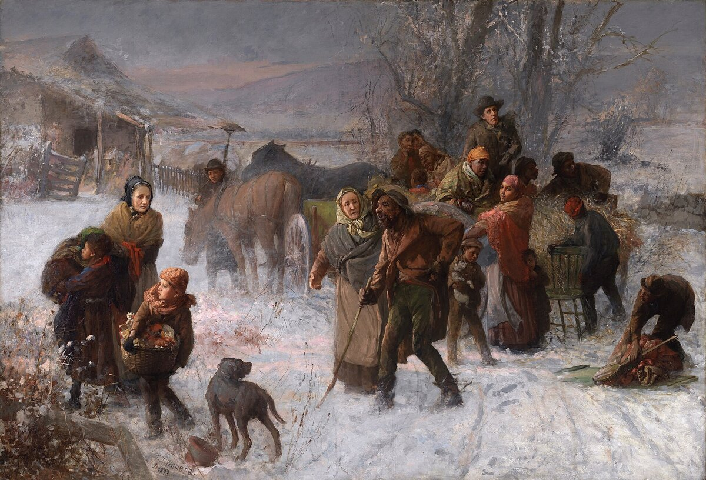

B1 · American History
Harriet Tubman and the Underground Railroad
She escaped once, alone. Then she went back, about thirteen times.
Play the audio and follow along, then read it again on your own. Tap or hover over a highlighted word to see what it means.
In the autumn of 1849, a woman of about twenty-seven walked north out of Maryland at night, alone, with no map. When she crossed into Pennsylvania she wrote later that she looked at her hands to see whether she was the same person.
Her name at birth was Araminta Ross. She had been born into slavery around 1822 and had worked since she was five years old — checking traps, carrying wood, and later cutting timber, which was heavy work usually given to men.

When she was about thirteen, an overseer threw an iron weight at another enslaved person and hit her in the head instead. She nearly died. For the rest of her life she had severe headaches and episodes in which she suddenly fell asleep, and she described vivid dreams that she understood as instructions from God.
Escaping was the beginning, not the end. Most people who reached the north stayed there. Tubman went back — historians count about thirteen journeys — and brought out around seventy people, including her parents, her brothers and their families.
The route she used is called the Underground Railroad, which was neither underground nor a railroad. It was a loose network of safe houses, hidden rooms, barns, churches and people who would move a stranger one stage further north and ask no questions.

The railway words were a code. A house was a station, the person who ran it was a stationmaster, and a guide was a conductor. Tubman became the most famous conductor of all, and she was proud that she never lost a passenger.
The work got harder, not easier. The Fugitive Slave Act of 1850 required officials in the free northern states to help capture escaped people and return them south. After that, reaching the north was no longer enough, and Tubman took her passengers all the way to Canada.
Her methods were practical. She traveled in winter, when nights were long, and left on Saturday evenings, because a runaway notice could not be printed in a newspaper until Monday. She carried a gun. She drugged babies with a few drops of medicine so that they would not cry.
When the Civil War came, she worked for the Union army as a cook, a nurse and then a scout. In June 1863 she guided a raid up the Combahee River in South Carolina which destroyed Confederate supplies and brought more than seven hundred enslaved people out in a single night. She is usually described as the first woman to lead an armed military operation in the war.
She spent the rest of her life in Auburn, New York, where she cared for elderly people with almost no money of her own, and spent years fighting the government for the army pension it had not paid her. She died in 1913, probably in her early nineties.
Key Vocabulary
- slavery the system in which people are owned as property and forced to work
- an overseer a man employed to watch and control enslaved workers
- to escape to get away from a place where you are held
- a network a connected group of people or places working together
- a safe house a house where somebody can hide without being reported
- a code a system of words or signs used so that others cannot understand
- a fugitive a person who is running away from the law or from capture
- a scout a soldier sent ahead to get information about the enemy
- a raid a sudden short military attack
- a pension money paid regularly to somebody after their service or work ends
Harriet Tubman and the Underground Railroad — B1 · American History · Renan the Teacher, English Language Academy · https://renangrossi.github.io/englishclasses/reading/b1/harriet-tubman.html
Interactive Exercises
Practice
Complete each exercise, then click Submit to see your score and an explanation for every answer.
Speaking & Writing
Discussion
There are no right answers here — use these to practice speaking, or write a short answer to each.
- Tubman said she never lost a passenger. What do you think made her so careful?
- The Underground Railroad depended on ordinary people taking a risk for a stranger. Would that network be possible today?
- She is now on American stamps and in school books, but spent her last years poor and fighting for a pension. Why does that happen to people like her?